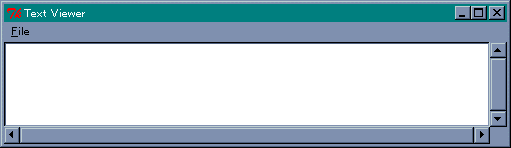
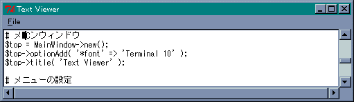
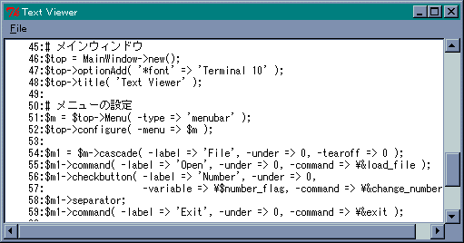
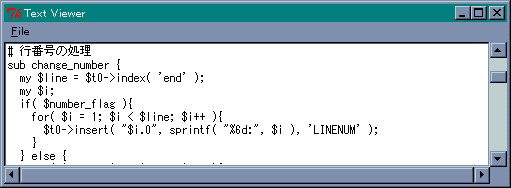

いよいよ巨大なウィジェットである テキストウィジェット を説明します。エントリーウィジェットがラインエディタとするならば、テキストウィジェットはスクリーンエディタに相当し、柔軟で高度なテキスト編集を行うことができます。
テキストウィジェットは Text メソッドで生成します。
$widget->Text( -options => value, ... );
テキストウィジェットには標準動作が用意されていて、それだけでテキスト編集が可能になっています。マウスの操作は、左クリックでカーソル位置の変更、ドラッグで範囲の選択、ダブルクリックで単語の選択が行えます。また、トリプルクリックで行の選択、ドラッグで文字列の選択ができます。カーソルなどのキー操作は、おおむね Emacs と同じなので、Emacs / Mule ユーザーには馴染みやすいでしょう。
テキストウィジェットの場合、オプション -width と -height は桁数と行数を表します。使用するフォントによってウィンドウのサイズが変わることに注意してください。
また、オプション -state に disabled を設定すると、テキストの変更を禁止することができます。これはキーボートからの入力だけでなく、プログラムによる挿入や削除も禁止されるので、必要なテキストデータをウィジェットに挿入してから、-state を disabled に設定してください。
それから、オプション -wrap で行の折り畳みを設定することができます。none を指定すると折り畳みは行われません。char は文字の切れ目で、word は単語の切れ目で折り畳みます。
テキストウィジェットはリストボックスと同様に、スクロールバーと組み合わせて表示範囲を変更することができます。このほかにも、文字列の挿入、削除、検索といった、テキストエディタとして必要なメソッドが多数用意されています。詳細はマニュアルや参考文献などを参照してください。また、多くのメソッドで位置の指定が必要になります。基本的な指定方法を表に示します。
| N.M | N 行の M 文字目 |
| @x,y | テキスト内の (x,y) の位置にある文字 |
| end | テキスト末尾 |
| マーク名 | その名前のマークをつけた位置 |
| タグ名.first | その名前のタグの最初の位置 |
| タグ名.last | その名前のタグの最後の位置 |
マークとタグについてはあとで詳しく説明します。テキストウィジェットでは、行は 1 から数えますが、文字は 0 から数えるので注意してください。この基本指定に加えて、次に示す相対指定を組み合わせることができます。
| +Nchars, -Nchars | そこから N 文字先、手前 |
| +Nlines, -Nlines | そこから N 行先、手前 |
| linestart, lineend | その行の先頭、末尾 |
| wordstart, wordend | その単語の先頭、末尾 |
テキストウィジェットは多機能なので、ほかのウィジェットに比べて使いこなすのはちょっと難しいと思います。ですが、テキストを表示するだけならば、とても簡単にプログラムすることができます。まず最初に、テキストファイルを表示するプログラムを作ってみましょう。次のリストを見てください。
リスト : テキストファイルを表示する
use Tk;
use Tk::FileSelect;
# メインウィンドウ
$top = MainWindow->new();
$top->optionAdd( '*font' => 'Terminal 10' );
$top->title( 'Text Viewer' );
# メニューの設定
$m = $top->Menu( -type => 'menubar' );
$top->configure( -menu => $m );
$m1 = $m->cascade( -label => 'File', -under => 0, -tearoff => 0 );
$m1->command( -label => 'Open', -under => 0, -command => \&load_file );
$m1->separator;
$m1->command( -label => 'Exit', -under => 0, -command => \&exit );
# テキストウィジェット
$t0 = $top->Scrolled( 'Text', -scrollbars => 'se', -wrap => 'none' )
->pack( -expand => 1, -fill => 'both');
# ファイルの選択
$fs = $top->FileSelect( -directory => 'C:/usr/', -filter => '*\.(txt|pl)');
MainLoop();
メニューの設定は イメージとファイルの選択 で作成した GIF / PPM 画像ローダーと同じです。ファイルの選択には FileSelect メソッドを使います。テキストのリードは load_file で行い、ここで表示するファイルを選びます。
テキストウィジェットの生成には、リストボックスとスクロールバー で説明した Scrolled メソッドで生成し、右と下にスクロールバーを設定します。スクロールバーを指定しているので、-wrap オプションには none を設定します。
テキストを読み込む関数 load_file は、次のようになります。
リスト : テキストファイルを読み込む
sub load_file {
my $filename = $fs->Show();
if( $filename ){
# 前のドキュメントを消去
$t0->delete( '1.0', 'end' );
# ファイルのリード
open IN, "$filename" or die "Can't open $filename\n";
while( <IN> ){
$t0->insert( 'end', $_ );
}
close( IN );
$t0->focusForce();
}
}
Show メソッドで FileSelect ダイアログを表示してファイル名を取得します。テキストウィジェットにデータを挿入するメソッドが insert で、削除するメソッドが delete です。まず、表示しているテキストを delete で削除します。1.0 は 1 行目の 0 文字、つまりテキストの先頭を表します。
次に、open でファイルをリードオープンし、1 行ずつデータを入力していきます。insert の位置指定は end なので、データはテキストウィジェットの最後に追加されます。最後に close でファイルを閉じて、focusForce メソッドでフォーカスを設定します。
 テキストウィジェットエントリーウィジェットやテキストウィジェットで日本語 (2 バイト文字) を扱う場合、Tk.pm 800.0xx ではカーソルの移動で文字が化けるなどの不具合があります。
 文字化けの様子これはモジュール Tk.pm そのものが日本語に対応していないことが原因です。つまり、2 バイト文字を 1 文字として処理していないのです。Tcl/Tk の場合、8.1 以降になると内部では文字列をユニコード (Unicode) で扱うようになったため、このような問題は発生しません。ところが、現在の Tk.pm 800.0xx は Tcl/Tk 8.0 に相当し、フォントを指定することで日本語を表示することはできますが、基本的には 2 バイト文字を扱うことは考慮されていないのです。
Tk.pm の日本語化は、廣島さんのページ Perl/Tk800.0xx 日本語化パッチ で Linux 用のパッチが公開されています。Windows 用のパッチですが、公開されていないか Google などで調べてみたのですが、残念ながら見つかりませんでした。
テキストを表示するだけではつまらないので、今度は行番号を表示してみましょう。メニューに次の項目を追加します。
$m1->checkbutton( -label => 'Number', -under => 0,
-variable => \$number_flag, -command => \&change_number );
Number がチェックされていれば行番号を表示し、そうでなければ行番号を表示しません。checkbutton の値はグローバル変数 $number_flag に格納し、行番号の処理は関数 change_number で行います。
リスト : 行番号の挿入と削除
sub change_number {
my $line = $t0->index( 'end' );
my $i;
print "$line\n";
if( $number_flag ){
for( $i = 1; $i < $line; $i++ ){
$t0->insert( "$i.0", sprintf( "%6d:", $i ) );
}
} else {
for( $i = 1; $i < $line; $i++ ){
$t0->delete( "$i.0", "$i.7" );
}
}
}
最初に行数を index メソッドで求めます。index はテキストの位置を line.char の形式で返します。end を指定することで最終行の次の行を求めることができます。たとえば、ファイルの行数が 55 行であれば、index( 'end' ) は 56.0 を返します。これでファイルの行数を求めることができます。
行番号は行の先頭に挿入することで表示します。変数 $i は行番号を表し、挿入する文字列を関数 sprintf で作成しています。この場合、先頭に空白を含めて 7 文字挿入することになります。行番号の削除は行の先頭から 7 文字削除するだけです。テキストウィジェットのメソッドで範囲指定を指定する場合、終了位置の文字は範囲に含まれません。ご注意くださいませ。これで 0 から 6 文字目までの 7 文字が削除されます。
最後に、関数 load_file を修正します。ファイルを読み込んだあとで $number_flag が真であれば、change_number を呼び出して行番号を挿入します。これでプログラムは完成です。
 行番号の表示
テキストウィジェットの最大の特徴は、特定の位置をマークしたり、特定の文字列にタグをつけ、フォントや色といった属性の変更やバインディングの設定が可能なことです。また、キャンバスウィジェットと同様に、テキストの中にウィジェットを表示することもできます。
それではマークから説明しましょう。マークはテキストの位置を表す名前のことです。マークは文字自体につけられるのではなく、文字と文字の間に設定されます。このため、マークで指定した位置に文字列を挿入する場合はとても便利です。また、テキストを操作するメソッドで、位置の指定にマークを使うこともできます。
マークを操作するおもなメソッドを表に示します。
| $text->markSet(markname => index); | マークの設定 |
| $text->markUnset(markname, ...); | マークの削除 |
| $text->markNames; | 定義されているすべてのマークを返す |
| $text->markGravity(markname => left_or_right); | マークのつき方を left と right で指定 |
| $text->markNext(index); | index より後ろにあるマークを返す |
| $text->markPrevious(index); | index より前にあるマークを返す |
マークの設定は markSet メソッドで行います。マークは指定した位置の文字とその前の文字の間に設定されます。たとえば '1.3' と指定すると、1 行目の 2 文字目と 3 文字目の間にマークが設定されます。文字は 0 から数えることに注意してください。たとえば、テキストウィジェットの 1 行目に abcdefg が書き込まれている状態で、次のように first という名前のマークを設定します。
$t0->markSet( first => '1.3' );
変数 $t0 はテキストウィジェットのオブジェクトです。これで、マーク first は 1 行目の 2 文字目 ( c ) と 3 文字目 ( d ) の間に設定されます。この状態で 1 行目の先頭文字 a を削除すると文字 d は 2 文字目になるので、first の位置は 1.3 ではなく 1.2 に変わります。また、行頭に文字 A を挿入すれば d は 4 文字目になるので、first は 1.3 から 1.4 に変わります。このように指定した文字 d が移動すれば、その文字とともにマークも移動するわけです。
マークの位置に文字列を挿入する場合、マークは挿入した文字列の左右どちらかにつきます。markGravity メソッドは、文字列を挿入したときのマークのつき方を指定します。left であれば挿入した文字列の左側に、right であれば右側にマークが設定されます。たとえば、first の位置に文字列 1234 を挿入するには、次のように行います。
$t0->insert( first, '1234' );
first の位置が c と d の間であれば、文字列は abc1234defg となります。このとき、マークが挿入した文字列の左側につく場合は c と 1 の間にマークが設定されます。逆に、右側につく場合は 4 と d の間に設定されます。デフォルトの設定は right なので、ここでもう一度 first に文字列 5678 を挿入すると、文字列は abc12345678defg となります。
それから、特別なマークとしてカーソル位置を表す insert と、マウスカーソルが指す文字位置を表す current があります。たとえば、カーソルの位置に文字列を挿入したい場合は、次のように行います。
$t0->insert( insert, '文字列' );
これで指定した文字列がカーソル位置に挿入されます。
テキストウィジェットのタグはキャンバスウィジェットのタグと同様に、指定した文字列に名前（タグ名）をつける機能です。そして、タグごとにフォントや色などの表示属性やバインディングを設定することができます。この機能により、テキストウィジェットは単なるテキスト編集だけではなく、ある単語をクリックしたら別のテキストを表示する、といったハイパーテキストを構成することができます。
Perl/Tk Widget Demonstrations には、テキストウィジェットのデモプログラムが用意されているので、実際に試してみるといいでしょう。Windows で動作する ActivePerl の場合、DOS 窓で widget を実行するとデモプログラムが起動します。
Perl/Tk では、タグを操作するメソッドが多数用意されています。タグの設定、削除、検索といった基本的な機能のほかに、オプションやバインディングの設定を行うことができます。フォント、色、アンダーラインなどの表示属性はオプションで設定します。おもなメソッドを表に示します。
| $text->tagAdd(tagname, index1, index2); | 指定した範囲に対して、タグ tagname を設定 |
| $text->tagDelete(tagname, ...); | タグの削除 |
| $text->tagNames(index); | index の位置にある文字と関連するすべてのタグを返す |
| $text->tagCget(tagname => option); | タグ tagname のオプションの値を返す |
| $text->tagConfigure(tagname, option => value); | タグ tagname のオプションを設定する |
| $text->tagBind(tagname, event, callback); | タグ tagname にバインドを設定する |
このほかにもいろいろなメソッドやオプションが用意されています。詳細はマニュアルや参考文献を参照してもらうことにして、さっそく簡単な例題を示します。前回作成したテキストを表示するプログラムで、行番号を赤く表示してみましょう。行番号を表す文字列にタグ LINENUM を指定し、色をオプションで設定します。オプションは tagConfigure メソッドで設定します。タグ LINENUM の設定は次のようになります。
$t0->tagConfigure( 'LINENUM', -foreground => 'red' );
文字の色は今まで使ってきたウィジェットと同じく -foreground で指定します。また、-background で背景色も指定することができます。このオプションが指定されていると、-borderwidth でふちの幅を、-relief で形状を指定することができます。
行番号にタグを設定することはとても簡単です。insert メソッドでタグを指定するだけです。
$t0->insert( index, string, tagname, ... );
タグを指定すると、挿入した文字列にそのタグが設定されます。したがって、前回作成した change_number を次のように修正するだけです。
リスト : 行番号の挿入と削除
sub change_number {
my $line = $t0->index( 'end' );
my $i;
if( $number_flag ){
for( $i = 1; $i < $line; $i++ ){
$t0->insert( "$i.0", sprintf( "%6d:", $i ), 'LINENUM' );
}
} else {
for( $i = 1; $i < $line; $i++ ){
$t0->delete( "$i.0", "$i.7" );
}
}
}
このように、挿入する文字列の後ろにタグ名 LINENUM を指定します。これで行番号が赤く表示されます。
 テキストを表示する
リスト : Text Viewer
use Tk;
use Tk::FileSelect;
# グローバル変数
$number_flag = 0;
# 行番号の処理
sub change_number {
my $line = $t0->index( 'end' );
my $i;
if( $number_flag ){
for( $i = 1; $i < $line; $i++ ){
$t0->insert( "$i.0", sprintf( "%6d:", $i ), 'LINENUM' );
}
} else {
for( $i = 1; $i < $line; $i++ ){
$t0->delete( "$i.0", "$i.7" );
}
}
}
# ファイルを選んで表示する
sub load_file {
my $filename = $fs->Show();
if( $filename ){
# 前のドキュメントを消去
$t0->delete( '1.0', 'end' );
# ファイルのリード
open IN, "$filename" or die "Can't open $filename\n";
while( ){
$t0->insert( 'end', $_ );
}
close( IN );
$t0->focusForce();
}
&change_number if $number_flag;
}
# メインウィンドウ
$top = MainWindow->new();
$top->optionAdd( '*font' => 'Terminal 10' );
$top->title( 'Text Viewer' );
# メニューの設定
$m = $top->Menu( -type => 'menubar' );
$top->configure( -menu => $m );
$m1 = $m->cascade( -label => 'File', -under => 0, -tearoff => 0 );
$m1->command( -label => 'Open', -under => 0, -command => \&load_file );
$m1->checkbutton( -label => 'Number', -under => 0,
-variable => \$number_flag, -command => \&change_number );
$m1->separator;
$m1->command( -label => 'Exit', -under => 0, -command => \&exit );
# テキストウィジェット
$t0 = $top->Scrolled( 'Text', -scrollbars => 'se', -wrap => 'none' )
->pack( -expand => 1, -fill => 'both');
# タグの設定
$t0->tagConfigure( 'LINENUM', -foreground => 'red' );
# ファイルセレクト
$fs = $top->FileSelect( -directory => 'C:/usr/', -filter => '*\.(txt|pl)');
MainLoop();